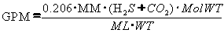
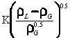
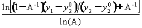
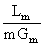
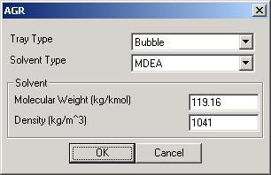
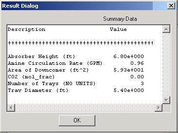

A process engineering (0D) model is used to simulate the performance of the Acid Gas Removal (AGR) unit. For advanced power generation configurations that involve a SOFC, the primary purpose of the AGR is to remove the H2S in the syngas down to less than 1ppm to avoid damaging the SOFC materials.
The solvents used in an AGR fall into two broad categories: physical and chemical solvents. The choice of solvent is usually dictated by the H2S/CO2 ratio in the syngas, the solvent’s selectivity for H2S over CO2, carbonyl sulfide removal, and whether total removal of CO2 is desired. Physical solvents rely upon variations in the physical solubility of gases to effect separation. Examples are Selexol and Rectisol. Chemical solvents are usually amine-based and remove H2S and CO2 through an acid-base reaction path. One of four amine-based solvents is usually employed (MEA, DGA, TEA and MDEA). In IGCC, selectivity of H2S over CO2 is important. Thus the best chemical solvent for this task is MDEA (Methyldiethanolamine). MDEA actually reacts with H2S but only as a catalyst for hydrolysis of CO2 [Kohl and Nielsen, 1997]. MDEA has the lowest capital cost in comparison with Selexol and Rectisol, which may also be selected for IGCC service. Rectisol is the costliest solvent but may be the best choice if complete removal of CO2 is preferred.
Modeling the AGR unit provides information on the amine circulation rate required to meet the H2S removal levels, and the size of the absorption tower and the number of stages required to effect the removal of H2S. The key design equations used in the model are:
1) The amine circulation rate:

where
GPM = amine circulation rate
MM = actual gas flow rate, million cubic ft/day
H2S = Mol% of H2S in gas mixture to be removed
CO2 = Mol% of CO2 in gas mixture to be removed
ML = Mol loading or (moles of acid gas) / (mol of syngas)
WT = Amine solution wt% circulated
2) Absorber bubbling gas velocity:
Ual = 
where
K = 0.25 for valve trays, 0.20 for bubble cap trays
Ual = Allowable velocity of gas through bubbling area, ft/s
rL = Density of amine solution, lb/ft3
rG = Density of syngas at tray conditions, lb/ft3
3) Theoretical number of stages (see [Perry, Seventh Edition Chapter 14]):
N = 
where
N = Number of Stages, N
A = Lm/mGm is the Absorption factor
Lm = liquid molar flow rate/unit area (i.e. solvent entering at the top of tower)
Gm = Gas molar flow rate/unit area (i.e. syngas entering at bottom of tower)
m = slope of equilibrium curve
note: this analysis is valid only if the equilibrium curve is represented by ye = mx
4) Absorption Factor
A = 
where
A, Lm , Gm and m are defined as above.
The
inputs for the AGR model are the tray type, solvent type
and solvent properties (molecular weight and density). The UI for entering
model inputs for an example case is shown in the left figure. The model outputs
include the amine circulation rate, size of the absorption tower, number of
stages required to effect the removal of H2S, clear liquor residence
time and the exit gas composition.
|
 |
After the module has executed, the Summary Data button provides summary information. The module outputs calculated absorber height (ft), amine circulation rate (gpm), area of downcomer (ft^2), mole fraction of CO2, number of trays and their diameter (ft). |
1. Kohl,
Arthur L., and Nielsen, Richard B., “Gas Purification.” Fifth Edition, Gulf Publishing Company,
2. Keating, M.H., et al. Mercury Study Report to Congress, Volume I: Executive Summary, EPA-452/R-97-003, December 1997.
3. Korens, Nick, and Simbeck, Dale R., and Wilhelm, Donald J., “Process Screening Analysis of Alternative Gas Treating and Sulfur Removal for Gasification.” Prepared for U.S.D.O.E./N.E.T.L. Task Order No. 739656-00100. December 2002.
4.
Ratafia-Brown, Jay,
and Manfredo, Lynn, and Hoffman, Jeffrey, and Ramezan, Massood, “Major
Environmental Aspects of Gasification-Based Power Generation
Technologies.” Prepared for : U.S.D.O.E/N.E.T.L. Gasification Technologies
Program. December 2002.